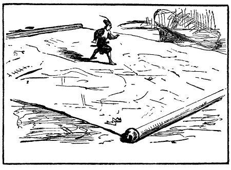

Miêu tả xứ sở - Đề nghị vẽ lại những bản đồ địa lý tốt hơn - Cung điện nhà vua - Mấy cảnh lượng thủ đô - Tác giả đi du lịch như thế nào - Miêu tả ngôi đền to nhất.
Bây giờ, tôi xin miêu tả cho bạn đọc biết cảnh tượng xứ này, theo như tôi biết trong khi đi gần nghìn dặm xung quanh thủ đô Lorbrulgrud. Đất đai của nhà vua dài chừng sáu nghìn dặm, rộng từ ba đến năm nghìn dặm. Vì vậy, tôi kết luận rằng các nhà địa lý học ở châu Âu đã lầm to khi họ nghĩ rằng giữa Nhật Bản và
Xứ này là một bán đảo, ở tận cùng về phía đông bắc là một dãy núi cao ba mươi dặm, nơi đây có núi lửa bao quanh nên không thể vượt qua. Những bậc tài giỏi nhất cũng không biết ở bên kia núi có giống người gì sống không - giả dụ là có người. Ba phía khác là biển cả bao bọc. Cả đất nước không có một hải cảng nào, những bờ biển, nơi cửa sông, lởm chởm những mỏm đá nhọn hoắt và biển ở đây sóng rất dữ, nên dù một con tàu nhỏ nhất cũng khó lòng mạo hiểm vào tới nơi được, thành thử, dân tộc sống ở đây bị cắt đứt mọi quan hệ với thế giới bên ngoài. Những sông lớn san sát thuyền bè và có nhiều loại cá ngon nên rất ít khi người ta đi đánh cá ngoài biển, bởi vì cá biển ở đây không to hơn cá biển ở châu Âu. Rõ ràng là tự nhiên trong việc sinh sản ra cỏ cây và súc vật đã hạn chế tính chất khổng lồ ở lục địa này. Về việc này tôi xin để các nhà triết học tìm xem lý do tại sao.
Tuy vậy đôi khi cá voi dạt vào bờ biển lởm chởm đá nhân dân sẵn lòng ăn loại cá này, có những con cá voi to đến mức một người vất vả lắm mới vác được lên vai. Thỉnh thoảng người ta cho cá voi vào thúng mang về thủ đô làm của lạ. Một lần, tôi thấy trên bàn ăn nhà vua một con cá voi nằm gọn trong đĩa ăn, nhưng hình như nhà vua không thích món ăn này lắm, chắc vì cá quá to, tuy vậy, ở Greenland tôi đã thấy những cá voi to hơn thế. Ở xứ này, dân cư đông đúc, có tới năm mươi mốt đô thị, hơn một trăm thành phố có thành luỹ, và vô số làng mạc. Để thỏa mãn óc tò mò của bạn đọc, tôi nghĩ có thể miêu tả cảnh tượng thủ đô Lorbrulgrud. Ở đó có một con sông cắt ngang thành phố làm hai phần gần bằng nhau. Thành phố có tám vạn ngôi nhà, khoảng sáu mươi vạn người, nó có chiều dài ba glomglung rưỡi. Tôi biết điều này là do xem bản đồ được nhà vua ra lệnh vẽ, mỗi bề một trăm foot và người ta trải xuống đất cho tôi xem. Tôi cởi giày, đi lại nhiều lần khắp bề dọc, bề ngang đi vòng quanh rồi tính tỷ lệ một cách khá chính xác.

Cung điện nhà vua không xây dựng theo một kiến trúc cân đối. Đó là những ngôi nhà kế tiếp nhau lộn xộn, có chiều dài khoảng bảy dặm. Những phòng chính thường cao hơn hai trăm bốn mươi foot và bề rộng tương ứng. Cô Glumdalclitch và tôi được cấp riêng một xe ngựa, cô thường dùng xe dẫn tôi di chơi phố và xem các cửa hàng. Cô thường cho tôi ngồi trong hộp. Nhưng cũng có những lúc chiều theo ý thích của tôi, cô cho tôi ra khỏi hộp. Lúc đi phố, cô cầm tôi ở trong tay để tôi nhìn rõ nhà cửa, dân chúng hơn. Theo tôi tính, xe ngựa của chúng tôi rộng bằng cung
Ngoài cái hộp to người ta thường đựng tôi mang theo, hoàng hậu còn cho làm một cái nhỏ hơn, độ mười hai foot mỗi cạnh, cao mười foot, dùng để đi chơi cho đỡ cồng kềnh mỗi khi Glumdalclitch đặt nó lên đùi. Đó vẫn là công trình của nghệ nhân trước do tôi chỉ bảo cách làm. Cái hộp du lịch này là một hình khối vuông, ba mặt có cửa sổ, chăng một cái lưới thép ở bên ngoài để đề phòng tai nạn trong các cuộc hành trình lâu dài. Mặt thứ tư không có cửa sổ nhưng có hai miếng sắt để khi nào tôi muốn đi ngựa, người mang tôi sẽ xỏ vào dây lưng rồi thắt vào lưng. Thường thường, một lão bộc trung thành và đứng đắn đảm nhiệm việc này khi tôi đi theo vua hay hoàng hậu, hoặc khi tôi muốn đi chơi trong vườn hay đi thăm một bà lớn hoặc một vị tổng trưởng mỗi khi cô bé Glumdalclitch ốm. Các quan đại thần đều biết tôi và khen ngợi tôi - tôi nghĩ là do tôi được nhà vua ưu đãi hơn là do tài đức của tôi. Trong các cuộc hành trình, khi tôi chán đi xe, một gia nhân cưỡi ngựa buộc cái hộp của tôi vào thắt lưng, rồi đặt hộp trên một cái gối để phía trước. Thế là qua ba cửa sổ, tôi có thể nhìn bao quát cả vùng. Trong buồng kê một tấm phản một cái võng mắc vào trần nhà, có hai cái ghế và một cái bàn bắt đinh ốc liền với sàn nhà phòng khi ngựa phi hay chạy cho khỏi đổ, mặc dù có khi xóc rất mạnh, nhưng tôi vốn quen đi biển nên chẳng hề gì.
Có khi cao hứng, tôi đi thăm thành phố. Bao giờ người ta cũng để tôi ngồi trong hộp du lịch, đặt trên đùi cô bé, cô ngồi trong một cái kiệu, theo tập quán của xứ sở, do bốn người khiêng và có hai người đi theo sau, họ đều mặc bộ đồ riêng của hoàng hậu may cho. Những người dân ở trong thành phố thường được nghe nói đến tôi, họ xúm đông, xúm đỏ quanh chúng tôi để xem. Cô bé vốn dễ tính nên cho kiệu dừng lại và cầm tôi trong tay cho mọi người trông rõ hơn.
Tôi khao khát được đi xem ngôi đền chính ở thủ đô, nhất là cái tháp trong đền, được coi là cao nhất nước. Vì vậy, một hôm cô Glumdalclitch dẫn tôi đến đấy, xin thú thực là tôi thấy thất vọng, bởi vì nó cao không quá ba nghìn foot, nếu cứ tính theo tỉ lệ tương ứng giữa những người ở đây và những người châu Âu chúng ta thì tháp cao như thế chẳng có gì đáng khâm phục, vì cái tháp này không cao bằng gác chuông ở Salisbury. Nhưng, không muốn có ý kiến chê bai một xứ sở mà suốt đời tôi phải chịu nhiều ơn huệ, nên tôi phải công nhận rằng cái tháp tuy không cao nhưng đẹp và vững chắc. Tường dày gần một trăm foot, xây bằng đá phiến, mối phiến chừng bốn mươi foot một cạnh. Tường đá tạc rất nhiều tượng các vị thần và các ông vua, to hơn tự nhiên. Một ngón tay út của một bức tượng rơi xuống đất, giữa đống gạch vụn, tôi đo bề dài được đúng bốn foot một inch. Cô bé nhặt lên, lấy mùi soa bọc rồi nhét vào túi áo cùng vài ba đồ vặt vãnh khác, trẻ con thường thích sưu tầm như thế.
Cái bếp của nhà vua quả là một ngôi nhà sang trọng. Phần trên xây hình vòm, cao độ sáu trăm foot. Chỉ còn thiếu mười bước nữa là cái lò chính rộng bằng vòm của nhà thờ